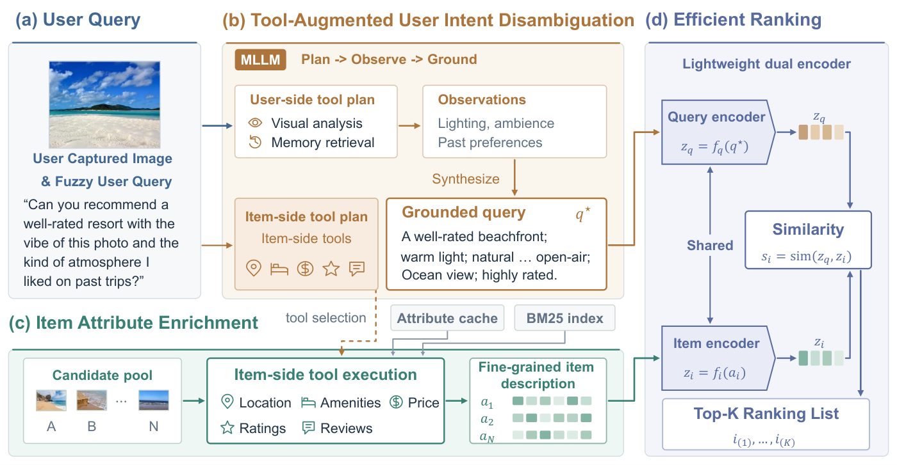
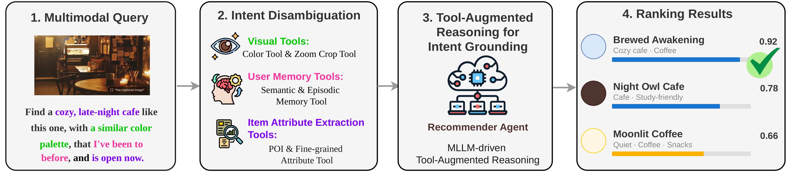
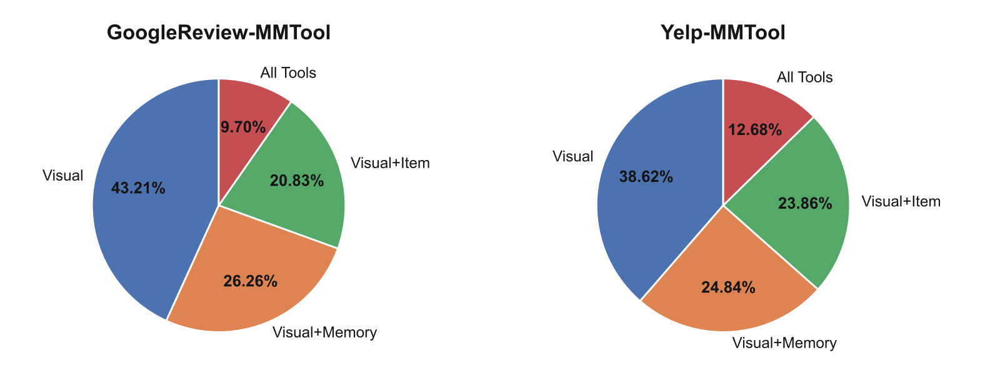

Contents · 9 sections
1What steps does a request go through, from photo to ranking?2How does that vague sentence become an explicit query?3Why not have the large model read dozens of candidates one by one?4How do the two venues swap places?5After the model calls tools, how does it know whether the calls were worth it?6The test questions were written by the authors, so how far can these scores be trusted?7Where does IntentLens score higher, and where does it lose?8With different questions and different phrasings, does the IntentLens gain hold?9At 4 seconds per request, where can IntentLens be used?SHARE
When a user snaps a photo and says something vague, what a recommender most needs to fill in is the information missing from that sentence: IntentLens first uses tools to look that information up and write it out as explicit text, then hands it to a cheap dual-encoder model that ranks the candidate venues.
The example in the IntentLens paper is an everyday one. A user points the camera on their smart glasses at a dish in a café and says, "Something with this kind of vibe, but more affordable and better for a quick lunch nearby." The recommender holds a few dozen nearby venues of the same category and must rank them so that the place this user wants ends up on top. The rest of this piece keeps using this example. Apart from the user's sentence, the venues, color temperatures and scores below are invented by me for explanation, and each is marked "illustrative" where it appears.
The trouble with this sentence is that the three pieces of information that decide which venue to recommend are scattered across three places: the photo, the user's history and the candidate venues' data. The user's own words state none of them. "This kind of vibe" lives in the photo's pixels, perhaps as yellowish lighting and a wooden table. "More affordable" only means something against the price level of places this user usually visits, and the price clues sit in the user's past reviews. "A quick lunch" depends on whether a candidate is open at noon and whether reviews mention fast service, and business descriptions often leave out opening hours and serving speed.
The most direct approach turns the photo into a text caption, concatenates it with the request into a query, uses a text embedding to compute the similarity between the query and each venue's description, and ranks by similarity. The paper's baseline BGE Retrieval works this way. Put it back into our example (illustrative): a boutique café at 40 dollars per person has a description full of café and pasta, so its similarity to the query is high. A corner lunch spot at 12 dollars per person only says "sandwiches and soup", so its similarity is low and it lands further down. Neither description contains anything matching "affordable" or "quick", so similarity cannot reflect either of the user's two requirements.
Two other families of existing methods cannot handle this request either. The first is multimodal recommenders, which use images and text as extra item features and then match items against the user's interaction history, so the photo and sentence the user gives right now barely enter the matching. If this user often went to brunch places, such a system keeps recommending brunch places (illustrative). The second family assumes the user has already written out every requirement, such as "warm lighting, under 15 dollars per person, open at lunch", but this user only said "more affordable".
IntentLens changes the step before ranking. When a request arrives, a multimodal large model that reads both images and text (the paper calls it an MLLM, implemented with Qwen2.5-VL) first picks tools, for example estimating the photo's color temperature, retrieving the user's past reviews, or reading the candidates' prices. The model then writes what these tools return into an explicit query text. The authors ran a control that changes only one thing, on Google Review-MMTool (a test set the authors built from Google local reviews). The ranking model, the candidate pool and the candidate information all stay fixed, and only the query text is swapped from the user's raw request to the version the multimodal model writes after calling tools. MRR (reported on a 100-point scale by the paper, here as well) rises from 33.6 to 40.2. This means the same ranking model gains 6.6 points purely because the query text is more explicit.
What steps does a request go through, from photo to ranking?
The table below shows the whole process. The first five steps run on every online request, and the sixth runs only when training the large model.
| Step | Input | Operation | Output | Training only? |
|---|---|---|---|---|
| 1 First-round planning | Photo, request, user ID, no candidates | The multimodal model generates an ordered tool plan | A JSON plan | No |
| 2 Tool execution | JSON plan, photo, user memory built from past reviews | External tool programs run the plan's visual tools (analyze the photo) and memory tools (read the user's history) in order | Tool results such as color temperature, dominant colors, user preferences | No |
| 3 Second-round query writing | Photo, request, tool results | The multimodal model writes a clarified query (the vague request rewritten explicitly) and picks item-side tools (tools that look up candidate attributes) | Clarified query and item-side tool list | No |
| 4 Candidate text assembly | Each candidate, the tool list from step 3 | Reads these tools' precomputed results from the cache and concatenates them with the venue description in a fixed order | One text passage per candidate | No |
| 5 Dual-encoder scoring | Query text, candidate texts | Encodes both and takes the inner product | Ranking of candidates | No |
| 6 Reward computation | The ranking, plus two control rankings without tool results (explained below) | Computes the reward and updates the large model with GRPO | Updated multimodal model | Yes |

Original figure from the paper: the multimodal model first calls tools to write a clarified query and selects item-side tools. The selected tools then read each venue's attributes in the candidate pool in a separate pass, and finally the dual encoder scores the candidates.
With this division of labor, the multimodal model only writes the query and picks tools, and the work of scoring dozens of venues goes entirely to the dual encoder. As a result, the number of large-model calls does not grow with the number of candidates.
How does that vague sentence become an explicit query?
The first round answers "what should be looked up". The multimodal model chooses from 8 query-side tools (tools that process the user's photo and history). Of these, 5 visual tools crop, zoom in, extract dominant colors, compute a color histogram and estimate color temperature. The other 3 memory tools fetch a summary of the user's long-term preferences, retrieve relevant past reviews, and expand the full content of a given review.

Original figure from the paper: visual, user-memory and item-attribute tools each fill in part of the information, producing a clarified user intent and concrete candidate attributes (such as price and opening hours).
This round outputs strictly formatted JSON. For the café example it looks roughly like this (illustrative, field format taken from the paper's prompt):
{"actions": [
{"id": "a1", "tool": "color_temperature", "input": "image_1", "arguments": {}},
{"id": "a2", "tool": "dominant_color", "input": "image_1", "arguments": {}},
{"id": "a3", "tool": "GetUserProfileSummary", "arguments": {}},
{"id": "a4", "tool": "RetrieveUserMemory", "arguments": {"query": "lunch price"}}
]}Here image_1 refers to the user's photo, and a1 to a4 are the action IDs. A later step in the plan can take an earlier step's result as input. For instance, when the photo's background is cluttered, the plan can first crop out the dish and then estimate color temperature on the cropped region.
The tool environment runs the plan in order and returns the results to the model. Suppose the four tools return (illustrative): a color temperature of about 3000K, dominant colors brown and off-white, a user profile of "prefers casual small places, low lunch budget", and a past review reading "14-dollar lunch, fast service, fits a lunch break".
In the second round the model reads these results and outputs three fixed parts (illustrative; the final TERMINATE is just an end marker):
CLARIFIED QUERY:
A casual lunch place nearby with warm lighting (about 3000K), brown and off-white tones,
around 15 dollars per person, open at lunch, fast service
ITEM-SIDE TOOLS:
["GetPrice", "GetHours", "GetReviewInsights"]
TERMINATEThe text under CLARIFIED QUERY is the core product of the whole pipeline, the clarified query from the table above. Compared with the raw request, "this kind of vibe" has become a color temperature and colors, "more affordable" has become about 15 dollars per person based on the past review, and "a quick lunch" has become opening hours and serving speed. The query text later sent to the dual encoder is the clarified query plus the results returned by these four tools, which the rest of this piece calls tool evidence.
Why not let the model re-plan after every tool call? Because each re-planning adds one more large-model call. Illustrative: if a request needs 4 tools, step-by-step planning calls the model 5 times (1 planning call at the start, plus 1 after each tool), while the two-round structure always calls it 2 times. The cost is that the model cannot call any more tools in the second round. When a tool fails or the evidence is insufficient, the prompt requires the model to keep the uncertain parts as uncertain in the clarified query and forbids inventing preferences.
Why not have the large model read dozens of candidates one by one?
The user's side of the request is now explicit, but the candidates still only have descriptions like "sandwiches and soup". The most direct fix would put all candidates into the model's context and let it read them one by one, but the more candidates there are, the longer the model's input becomes, so the paper shows the model no candidates in either round.
Instead the paper uses 6 item-side tools: look up venue details, review insights, rating, price, opening hours, and search by condition. The system precomputes these tools' results for every venue and stores them in a cache, and the tool list the model outputs in the second round only decides which results are read this time. Hoot says

- The whole plan comes first. Round 1 writes all 3 steps at once (illustrative), the environment runs them in order, and the MLLM is not consulted in between. A later step can use an earlier result, such as cropping before reading colors.
- Memory is prepared ahead of time. Reviews become notes and indices offline, and the user profile is summarized in advance. Online, tools fetch the profile, retrieve notes for this query, and expand one only when needed, without rereading the full history.
- The candidate side makes 0 MLLM calls. Once Round 2 names the item tools, candidates only read the cache, so GetReviewInsights results already exist when the request arrives. Different tools produce different text, and the paper's formula encodes that assembled text.
- The tally for this request: MLLM 1+1=2 calls, illustrative tools 2+1=3 calls. Stage 1 at 3,590 ms plus Stage 2 at 515 ms makes 4,105 ms, with Stage 1 at 87%.
The two MLLM rounds are the only model calls, the memory bank and item cache are ready before the request, and the clarified query is what goes to ranking. The request follows the café example; its tool steps and outputs are illustrative. The paper says item fields come from a cache without MLLM calls, but does not detail how that cache is produced or whether candidate vectors are cached in practice; the diagram follows the paper's formulas, assembling text first and encoding it after.
Source
paper §3 memory notes; §4.1 Eqs. (1)–(4) two-round procedure and cached item tools; §4.3 Eq. (10); Appendix B.1 user-memory tools and Algorithm 1; Appendix C planner prompts; Table 5(b) latency.With the list above, the text assembled for the two venues looks roughly like this (illustrative; more $ means more expensive):
Boutique café: pasta and pour-over coffee, wooden interior. Price tier $$$. Open 17:00–23:00. Review insights: good for dates, slow service. Image color temperature 2900K, dominant color brown.
>
Corner lunch spot: sandwiches and soup. Price tier $. Open 10:30–15:00. Review insights: fast service, fits a lunch break. Image color temperature 3100K, dominant colors brown and off-white.
The color temperature and dominant colors at the end of each passage are precomputed too. Whichever color tools ran on the query side, the candidate text carries the matching color information, so that "about 3000K" in the query text can be compared with the color temperature in the candidate text.
Illustrative: with 50 venues and 3 tools, one request reads 150 fields, all from the cache, with 0 extra large-model calls. If the model summarized each venue, it would take 50 more calls. This shows that the cost of reading candidate information only grows linearly with the number of candidates and never goes through the large model.
How do the two venues swap places?
Once the query text and candidate texts are ready, the ranking step (the paper's Stage 2; looking up tools, writing the query and assembling candidate texts all belong to Stage 1) calls no tools. The same BGE-M3 encoder encodes both sides, takes the CLS vector with L2 normalization, and the inner product is the score.
Back to the two venues (illustrative). With the raw request as the query, the boutique café scores 0.7 and the lunch spot 0.5, so the lunch spot the user wants is ranked 2nd. With the clarified query plus evidence, the boutique café scores 0.6 and the lunch spot 0.8, so the lunch spot is ranked 1st. MRR averages, over queries, the reciprocal rank of the first correct result, and for this query that reciprocal goes from 1/2 to 1.
This dual encoder has to be trained in advance. The authors built the test sets themselves, so at construction time they know which tools each query should call, and the rest of this piece calls these the reference tool chains. The authors run the reference tool chains to get query texts and candidate texts, train the dual encoder with InfoNCE, and take the hard part of the negatives from other venues in the same category. After training it is frozen, because the next section uses it to score the large model, and only with a fixed ranker does the same output receive a consistent reward.
After the model calls tools, how does it know whether the calls were worth it?
A pretrained multimodal model can already call tools, and SFT can give it a starting point, but neither guarantees that what it looks up helps ranking. So after SFT the authors add a stage of reinforcement fine-tuning (the paper calls it RFT, reinforcement fine-tuning), with rewards coming straight from the frozen dual encoder above and GRPO as the algorithm.
The simplest reward is the reciprocal rank of the first correct result, written . It cannot assign credit: an output may rank well because the clarified query alone is enough, while the tool evidence appended after it does nothing. So the authors rank each output two more times. Once with the same clarified query but with the appended tool evidence removed (information already written into the clarified query, such as color temperature and budget, stays untouched), giving reciprocal rank . Once with the user's raw request, giving reciprocal rank . All three use exactly the same candidate texts.
Here clips negative values to 0. takes the smaller of the two terms, so to earn a positive bonus an output must beat both "the clarified query without evidence" and "the user's raw request". Below are three outputs worked through (illustrative):
| Situation of this output | Rank with evidence and | Evidence removed | Raw request | Bonus | |
|---|---|---|---|---|---|
| Evidence helps | 1st, 1 | 2nd, 0.5 | 4th, 0.25 | 0.5 | +0.02 |
| Appended evidence does nothing | 2nd, 0.5 | 2nd, 0.5 | 4th, 0.25 | 0 | 0 |
| Evidence hurts | 4th, 0.25 | 2nd, 0.5 | 4th, 0.25 | −0.25 | −0.02 |
In the first row is the smaller of 0.5 and 0.75, namely 0.5, which is clipped to 0.1 and multiplied by 0.2 to give +0.02. In the third row −0.25 is clipped to −0.1 and multiplied by 0.2 to give −0.02. The second row best explains the design. This output beats the raw request by 0.25 but earns no bonus at all, because its rank does not change when the appended evidence is removed. This shows the gain is already carried by the clarified query, and the tool evidence appended after it adds nothing extra. In the third row the evidence pulls the rank down, so it is penalized.
±0.02 looks tiny, but it matters because GRPO only compares the 4 samples drawn for the same question, subtracting the group mean and dividing by the group standard deviation when computing advantages. Illustrative: all 4 samples rank the lunch spot 1st, two of them with helpful evidence (+0.02) and two whose appended evidence does nothing (no bonus), so the rewards are 1.02, 1.02, 1.00, 1.00 (ignoring tool rewards for now). The mean is 1.01 and the standard deviation about 0.01, so after normalization the advantages are roughly +1, +1, −1, −1. When ranks tie, this small bonus decides which samples get positive advantages, and the model is updated toward producing those outputs.
The reward has one more term for how accurately tools are chosen. If only ranking were rewarded, calling a few extra tools would cost almost nothing. The authors compare the tools the model picks with the reference tool chain, compute one F1 each for the query side and the item side, and subtract a penalty proportional to the share of unnecessary tools, with coefficient 0.3. Illustrative: the item side has 6 tools, the reference answer is price and opening hours, and the model also picks rating. Precision is 2/3, recall is 1, and F1 is 0.8. The 1 extra tool is 1/6 of the inventory, so 0.05 is subtracted and this term scores 0.75. The authors observe that during training the tool-selection F1 rises steadily while the tool-call frequency falls, meaning redundant calls are decreasing.
The last change is in how the RFT loss is computed. A trajectory mixes two kinds of tokens: the plan and clarified query sampled by the model itself, and results returned by tools, like "3000K". Tool results must stay in the context so the second round can read them, but those positions are excluded when computing the policy loss and KL, which the paper calls observation masking. Illustrative: in one trajectory the model generates 100 tokens and the tools return 300. Without the exclusion, three quarters of the tokens in the loss were not sampled by the model, yet they would be updated as if they were its outputs.
The test questions were written by the authors, so how far can these scores be trusted?
No existing dataset contains queries of the "photo plus vague request" kind, so the authors built one each from Google Local Review and Yelp 2019. Google Review-MMTool has 773 queries, with an average of 40 candidates and 3.2 correct answers per query. Yelp-MMTool has 1,727 queries, with an average of 63 candidates and 2.0 correct answers per query. These numbers show that the task is to push two or three correct answers to the top among a few dozen nearby venues, which is a different job from retrieval over a full catalog of businesses.
The questions are built in reverse. The authors first fix a tool combination, run the tools on the user's history and a reference photo, have an LLM write the tool results into an explicit need, and then rewrite it into a vague phrasing. Illustrative: the explicit version is "find a lunch place with warm 3000K lighting and price tier $", and the rewrite is "this kind of vibe, but more affordable". Rewrites that expose color names, exact ratings or price symbols are filtered out. Queries fall into four tiers by the tools they need: visual tools only, visual plus user memory, visual plus item attributes, and all three.

Original figure from the paper: the share of each of the four query tiers (T1 to T4) in the two test sets. T1 to T4 correspond in order to the four tiers above, and the higher the tier, the more tools a query needs.
The candidate pool comes from nearby venues of the same category and deliberately includes hard negatives (wrong answers that easily get ranked high): venues whose photos look very similar, venues that conflict with the user's history, venues that conflict with the current situation, plus random venues. A candidate counts as a correct answer for a query only if it satisfies all four kinds of requirements at once: text description, photo style, user preference and venue attributes.
Three external annotators audited 400 queries, and 374 (93.5%) passed, where passing means fluent, natural, understandable, and genuinely requiring external evidence to answer. Without seeing the correct-answer labels, they confirmed 1,224 of the 1,290 venues labeled as correct answers (94.9%). This shows the questions are mostly well formed and the labels mostly reliable.
The audit cannot settle another issue: queries, reference tool chains and correct answers come from the same construction pipeline, and the authors acknowledge this may introduce linguistic, cultural, preference and model-specific biases and make results depend on that pipeline. The authors therefore added a ranking model that took no part in training and blinded human evaluation, with both results reported later.
Where does IntentLens score higher, and where does it lose?
All methods rank the same candidates. The main results are below, all in MRR.
| Method | How it ranks | Yelp | |
|---|---|---|---|
| BGE Retrieval | Photo caption concatenated with the request, text similarity | 25.7 | 32.2 |
| Qwen2.5-VL 7B direct | No tools, no history, the large model outputs the candidate ranking directly | 28.0 | 25.4 |
| UniMP-style implementation (3B) | Reads the photo, request and past reviews, ranks directly | 33.9 | 43.7 |
| GPT-5.4 | Reads only the request and candidate data, the model outputs the ranking directly | 38.1 | 33.6 |
| GPT-4o | Reads the photo, request and candidate data, the model outputs the ranking directly | 36.8 | 41.4 |
| GPT-5.4 with evidence | Reads the clarified query and evidence produced by IntentLens | 41.6 | 41.5 |
| IntentLens 3B | Full pipeline with a 3B large model | 34.5 | 33.5 |
| IntentLens 7B | Full pipeline with a 7B large model | 40.2 | 46.7 |
| Oracle Ranker | The BGE-M3 dual encoder used by IntentLens, reading the test set's annotated clarified query and evidence | 44.4 | 53.7 |
The same Qwen2.5-VL 7B scores only 28.0 and 25.4 when it ranks candidates directly, but 40.2 and 46.7 inside the full pipeline. This shows a multimodal large model alone is not enough, and the gap comes from the whole pipeline of tool calls, reinforcement fine-tuning and downstream ranking.
GPT-5.4 scores 38.1 and 33.6 when reading the raw request, and rises to 41.6 and 41.5 after reading the text produced by IntentLens. This shows the clarified query and evidence also help a different ranking model, so their value is not tied to the dual encoder.
The table also shows that IntentLens does not lead everywhere. On Google, GPT-5.4 with evidence is 1.4 points above IntentLens 7B, and both have Hit@1 of 31.0. On Yelp, IntentLens 7B's 46.7 is above 41.5. This shows that, reading the same evidence, the cheap dual encoder is slightly below GPT-5.4 on Google and higher on Yelp.
The size of the large model matters a lot. Going from 3B to 7B lifts MRR from 34.5 to 40.2 on Google and from 33.5 to 46.7 on Yelp. On Yelp the 3B version is even below the UniMP-style implementation that also uses a 3B model to rank directly (43.7). The authors' reading is that tool use becomes fully effective only when the model has enough capacity.
Back to the control from the opening, now with the third number added. With the same dual encoder and the same candidate texts, the query text scores 33.6 as the raw request, 40.2 as the version written by the large model, and 44.4 as the annotated version. The model-written query closes 6.6 of this 10.8-point gap, leaving 4.2 points. On Yelp, IntentLens 7B is still 7.0 points below the Oracle Ranker. This shows that with the ranking model held fixed, the queries written in Stage 1 still have room to improve. The oracle only represents what this dual encoder scores on annotated inputs, not an upper bound for every system.
The ablations of individual components are all run on Google, where the full model scores 40.2. In the tool group, running no query-side tools at all drops it to 33.5, turning off only the visual tools gives 35.7, using only the raw descriptions for candidates gives 38.0, and turning off only the memory tools gives 38.1. This shows query-side grounding has the largest effect, and among single tool categories the visual tools matter most. My reading is that this also relates to how the questions were built, because all four tiers require visual tools.
In the training-objective group, SFT only without RFT gives 33.1, dropping the two no-evidence controls from the reward gives 35.0, not excluding tool-returned tokens from the loss gives 35.1, and removing the item-side tool-selection reward gives 35.5. Removing any one of them costs 4.7 to 7.1 points. This shows SFT alone is not enough, each of the reward and loss designs described earlier affects the score, and RFT as a whole has the largest effect.
With different questions and different phrasings, does the IntentLens gain hold?
The authors first tested three kinds of transfer. When training and testing are on the same dataset, MRR is 40.2 and 46.7. When some venue categories are held out of training and appear only at test time, the two datasets drop to 36.2 and 43.5. When some tools are held out of training, they score 35.8 and 44.1. When training is done on the other dataset, they score 34.7 and 38.9. This shows changing categories or tool configurations costs relatively little, while transfer across platforms costs the most.
To check whether what was learned only works for the dual encoder used in training, the authors gave the queries and evidence produced by the large model before and after RFT to all-MiniLM-L6-v2 for ranking, a model that took no part in RFT and was never tuned on this data. With candidate pools fixed, using the post-RFT queries and evidence instead of the pre-RFT ones raises MRR by 4.6 points. This shows the gain from RFT persists on a ranking model that took no part in training.
On the human side there are two results. Participants saw only images and task briefs, with no access to the synthetic queries, candidates or labels, and wrote 100 requests, 78 of which passed quality checks. On the requests that passed, IntentLens 7B without retraining beats BGE Retrieval by 7.3 MRR points. In addition, three external annotators compared the top-three recommendation lists for 100 queries without seeing system names. By majority vote, IntentLens wins on 89% of queries and BGE Retrieval on 6%.
These two results show the gain is not limited to LLM-synthesized sentences. But both compare only against BGE Retrieval, and the human requests were written from existing task briefs, so they cannot stand in for real online traffic.
At 4 seconds per request, where can IntentLens be used?
The authors measured the latency of the 7B version on a single NVIDIA H20. Stage 1 takes 3,590 ms, with 2 large-model calls and 3 to 5 tool calls. Stage 2 takes 515 ms, consisting only of dual-encoder scoring. Together it is about 4 seconds, so the user who took the photo waits 4 seconds to see results. This shows that speeding things up means cutting Stage 1 first, since the dual encoder is no longer the bottleneck.
This latency was measured with 40 to 63 candidates per query and all candidate tool results cached. So what IntentLens does here is re-rank a small set of nearby venues, and the numbers do not represent the cost of retrieval over a full catalog of businesses. The system also has to read the user's photo and personal history, so a real deployment must solve privacy and consent issues, which the authors also list as a deployment obstacle.
Back to the photo in the café. The ranking model is a BGE-M3 dual encoder from start to finish, and what changes is the text fed into it: "this kind of vibe" becomes warm lighting of about 3000K with brown and off-white tones, and "more affordable" becomes this user's budget. With the ranking model and candidates fixed, this step is worth 6.6 MRR points, while the model-written query is still 4.2 points short of the annotated query, and this is exactly the part most worth refining next.
How did this read for you?
Hoot made a note. Thanks for the feedback.
One tap, no sign-in; tap again to undo. Only anonymous counts are kept, never who you are.
Discussion
Add experiment details, reproduction notes or a different take. Requires a GitHub sign-in.
Loading the discussion…